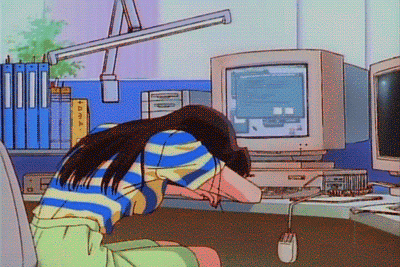
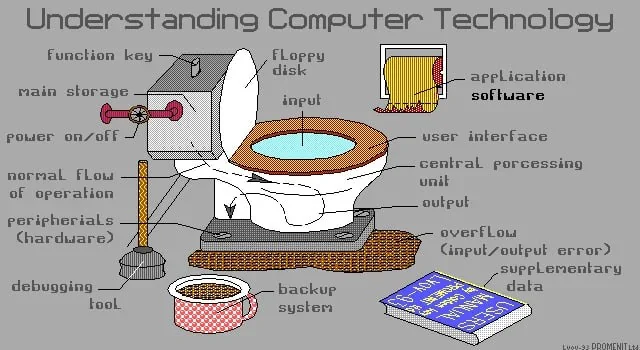
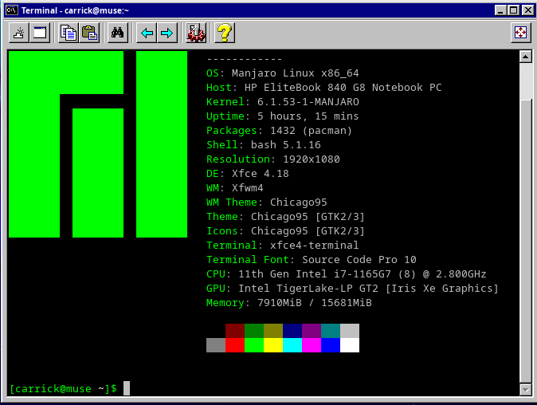

Hello, and welcome to my webpage here on the internet. I am Irish, I am 27 years old. I work with the confusers. I like linux, wood working and big into music. I drive an old car and have a big subwoofer in it. Please find some stupid things on this website. I am fond of cats. this website breaks as soon as you load it on a mobile. you have been warned.

 Movie reviews Prolly very very empty at the moment as I dont watch many... This has pictures on it...Gallery of images NEED TO ADD MORE REMIND ME this one is pretty dumb just a coding thing I did will do more I guess This is where I have all my rants and ravings on books very cool ! logs your ip address ! :3
Movie reviews Prolly very very empty at the moment as I dont watch many... This has pictures on it...Gallery of images NEED TO ADD MORE REMIND ME this one is pretty dumb just a coding thing I did will do more I guess This is where I have all my rants and ravings on books very cool ! logs your ip address ! :3 

IF you had asked me a year ago, what my favourite laptop was I would have looked you dead ass in the eye and said thinkpad. That is no longer the case, I had a pretty middling expierence with one that I bought this year an i7 whatever t-380, and it was nothing but slow and I really did not much care for the style of keyboard that they went with. that being said for about a decade I did use thinkpads and I still kinda wish I had a x220 with a modern specs.
What happened to it.
at the moment though I have to make do hp elite book g8 840, which Is quite decent, apart from a mildly disapointing keyboard.
I do think its a shame that we cant have just ugly laptops with
decent keyboards anymore and the x220 was such a lovely machine
When I was like 14/15 I had a phase of being obsessed with old computers still am obsessed with the asethics and looks of old computers, but I was using a ti994a and a zx spectrum, doing lil basic programmes and playing games on them.
I think computers are one of the best things and by far the worst things to happen to us as human fleshy bags but sure look its chill as well.

this is a very informative picture
this is also very informative picture
by the way I do use linux !



his name is keith and he is missing his back leg as he cannot handle pointers, this image was drawn by Richard Stallman
Here is a link to my Github...


I drive a 2003 golf mk4
It's going mighty at the moment. with a cracked windscreen...
I never thought I would drive a golf but I am found of the older cars.
I am not a Vee Dubber stan but I do recommend a mk4 golf if you need a car
~~~ Update as of september 2023 it has passed its NCT and is road legal another year~~~
In a year of ownership I put 20k miles on it and it only cost me an exhaust and brakes, so I think its a decent car <3

This image is accurate.


SITE STILL UNDER CONTSTUCTION


it has been two years and it is still a work in progress


I have two degrees in music technology, and like playing guitar, synth and bass. I also like
programming music using programmes such as c sound.


Not going to lie to you, this section on this website is just really an excuse to have as many photos as possible of X files more than anything else.

I first watched X files on DvD way back when, It has to be when I was 12/13 or so, But I have been watching some again recently. It's rather strange. As a literal child I did not pickup on half of the amount of chesse and just strange descions and weird plots that I am not picking up on as of now.
Plus I think Scully is a babe and had a massive crush on her
Still do...

I take loads of pictures too, click the camera to follow me on instagram
I collect old lenses and I do film photography
or click this to see some photos on here